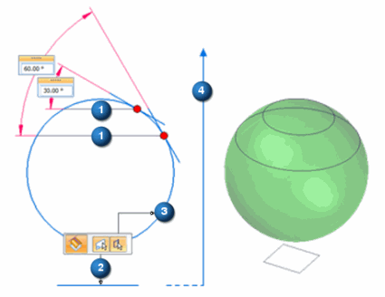

Isocline command
Use the Isocline command to place an isocline curve on one or more selected faces. An isocline curve is a curve connecting points on a surface whose surface normal makes a constant angle to the direction of pull (4).
The required inputs are: a reference plane, surface body, and an angle.

The above example shows two single isocline curves (1) created on a spherical surface (3), at 30 and 60 degrees from the reference plane (2).
You can see the relationship between the angle and where the isocline curve is created. The direction vector (4) is normal to the reference plane.
You can create isocline curves on any selected face, or on multiple faces. You may need to flip the direction vector to get corresponding isocline curves on adjacent faces.
The input angle range is 0.00 < 90.00 degrees.
Use isocline curves to:
-
Split a surface.
-
Construct parting lines and parting surfaces on a mold or casting.
-
Analyze a face/surface using draft angle map (family of isoclines).
-
create new surfaces.